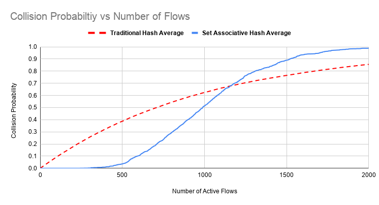
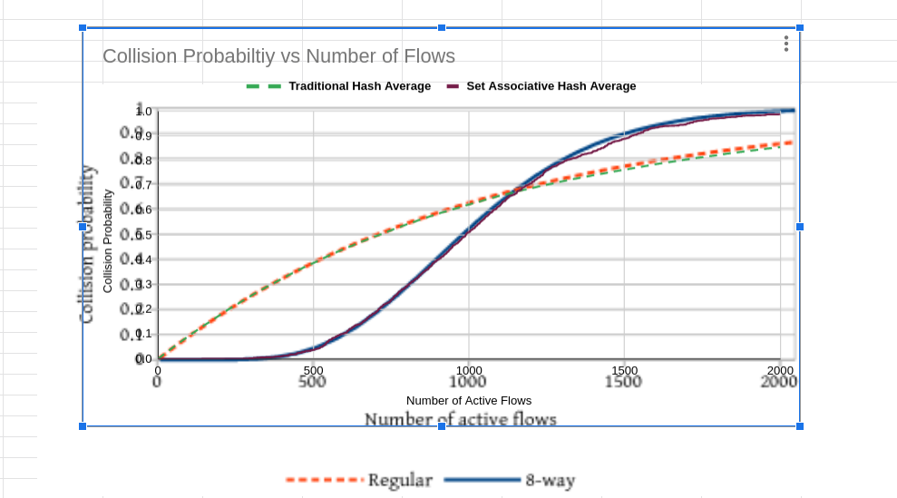

FqCoDel queue disc¶
This chapter describes the FqCoDel ([Hoe16]) queue disc implementation in |ns3|.
The FlowQueue-CoDel (FQ-CoDel) algorithm is a combined packet scheduler and Active Queue Management (AQM) algorithm developed as part of the bufferbloat-fighting community effort ([Buf16]). FqCoDel classifies incoming packets into different queues (by default, 1024 queues are created), which are served according to a modified Deficit Round Robin (DRR) queue scheduler. Each queue is managed by the CoDel AQM algorithm. FqCoDel distinguishes between “new” queues (which don’t build up a standing queue) and “old” queues, that have queued enough data to be around for more than one iteration of the round-robin scheduler.
FqCoDel is installed by default on single-queue NetDevices (such as PointToPoint, Csma and Simple). Also, on multi-queue devices (such as Wifi), the default root qdisc is Mq with as many FqCoDel child queue discs as the number of device queues.
Model Description¶
The source code for the FqCoDel queue disc is located in the directory
src/traffic-control/model and consists of 2 files fq-codel-queue-disc.h
and fq-codel-queue-disc.cc defining a FqCoDelQueueDisc class and a helper
FqCoDelFlow class. The code was ported to |ns3| based on Linux kernel code
implemented by Eric Dumazet.
Set Associative Hash is also based on Linux kenel Cake queue management code. Set associative hashing is used to reduce the number of hash collisions in comparison to choosing queues normally with a simple hash. For a given number of queues set associative hash has fewer collisions in comparison to traditional hash as long as the number of flows is fewer than the number of queues. Essentially, it makes the queue managment system more efficient.Our idea is a vital component of CAKE, which is another popular flow management algorithm that is also implemented in Linux, and is being tested for FqCodel. Furthermore, this module can be directly used with Cake when it is implemented. The only changes are in the DoEnqueue function and is detailed below.
- class
FqCoDelQueueDisc: This class implements the main FqCoDel algorithm:FqCoDelQueueDisc::DoEnqueue (): If no packet filter has been configured, this routine calls the QueueDiscItem::Hash() method to classify the given packet into an appropriate queue. Otherwise, the configured filters are used to classify the packet. If the filters are unable to classify the packet, the packet is dropped. Otherwise, it is handed over to the CoDel algorithm for timestamping. Then, if the queue is not currently active (i.e., if it is not in either the list of new or the list of old queues), it is added to the end of the list of new queues, and its deficit is initiated to the configured quantum. Otherwise, the queue is left in its current queue list. Finally, the total number of enqueued packets is compared with the configured limit, and if it is above this value (which can happen since a packet was just enqueued), packets are dropped from the head of the queue with the largest current byte count until the number of dropped packets reaches the configured drop batch size or the backlog of the queue has been halved. Note that this in most cases means that the packet that was just enqueued is not among the packets that get dropped, which may even be from a different queue.FqCoDelQueueDisc::DoEnqueue ():SetAssociative DoEnqueue works differently for a set-associative hash. The following paragraph details the working of set-associative hash and its use. In this implementation, we use 8 way set associativity to divide the queues into groups of 8. Call this group of 8 queues a set. The way ns3 determines a queue is by taking the hash of the packet flow. We mainly use 2 hashes. FirstHash is generated from murmur3 by taking mod 1024. The second hash, which is the outerHash = firstHash - first hash (mod 8), gives the first queue of the set which the flow should go into. Now, unlike Linux, there aren’t 1024 queues already existing in memory. So, when a new packet comes, queues are created as and when needed. However, to know the queue number, a map “m_flowsIndices” is created that maps the outer hash to the queue number.m_flowIndices plays an important role. Let’s say that flow hash modulo 1024 was 803. Linux would directly correspond this packet to the set containing queues 800-807 and put it in an empty queue.The existing implementation of fqCoDel in ns3 did this by creating the first queue, indexed at 0, and assigning m_flowsIndices[803] to 0, but in our case, we need to maintain set information. One way to do this is to create new queues in such a way that eight queues together can be considered as a set. In our implementation, we create eight queues altogether if the set wasn’t already present. We store the index of the first queue in this set, inside m_flowsIndices[800] (which is 0). Now, there are 8 queues created, among which seven of them are empty. 800 is the outer hash generated through the above equation.Logically outer hash is the closest multiple of 8 less than 803 ) . Now, say a packet with flow 805 comes in. Since it belongs to a set corresponding to 800, consequently has the same outer hash, and m_flowsIndices[800] is already set, our implementation now goes to queue 0, and searches iteratively in the next eight queues. Similar to Linux, we maintain a tags[] array, that allows us to determine the flow that is stored in a queue by mapping firstHash to the initial flowHash. To enable SetAssociativity, we also added a boolean attribute to the FqCoDel class named m_setAssociativity.When a collision occurs, if the packet is of a different flow than the ones in the set, we don’t consider creating new flows for the packet, since this approach might waste resources in the long run, or increasing the number of queues. A better approach is to enqueue the packet into the first queue. After adding the flow, the corresponding tag for that queue is updated to the flow hash of the newly enqueued packet. An example is if the set is already full and a 9th flow enters, then it is queued into the first queue of the set, and the tag is updated to be the hash of the 9th flow. The situation highlighted is a guaranted collision and cannot be avoided without increasing the overall number of queues.FqCoDelQueueDisc::DoDequeue (): The first task performed by this routine is selecting a queue from which to dequeue a packet. To this end, the scheduler first looks at the list of new queues; for the queue at the head of that list, if that queue has a negative deficit (i.e., it has already dequeued at least a quantum of bytes), it is given an additional amount of deficit, the queue is put onto the end of the list of old queues, and the routine selects the next queue and starts again. Otherwise, that queue is selected for dequeue. If the list of new queues is empty, the scheduler proceeds down the list of old queues in the same fashion (checking the deficit, and either selecting the queue for dequeuing, or increasing deficit and putting the queue back at the end of the list). After having selected a queue from which to dequeue a packet, the CoDel algorithm is invoked on that queue. As a result of this, one or more packets may be discarded from the head of the selected queue, before the packet that should be dequeued is returned (or nothing is returned if the queue is or becomes empty while being handled by the CoDel algorithm). Finally, if the CoDel algorithm does not return a packet, then the queue must be empty, and the scheduler does one of two things: if the queue selected for dequeue came from the list of new queues, it is moved to the end of the list of old queues. If instead it came from the list of old queues, that queue is removed from the list, to be added back (as a new queue) the next time a packet for that queue arrives. Then (since no packet was available for dequeue), the whole dequeue process is restarted from the beginning. If, instead, the scheduler did get a packet back from the CoDel algorithm, it subtracts the size of the packet from the byte deficit for the selected queue and returns the packet as the result of the dequeue operation.FqCoDelQueueDisc::FqCoDelDrop (): This routine is invoked byFqCoDelQueueDisc::DoEnqueue()to drop packets from the head of the queue with the largest current byte count. This routine keeps dropping packets until the number of dropped packets reaches the configured drop batch size or the backlog of the queue has been halved.
- class
FqCoDelFlow: This class implements a flow queue, by keeping its current status (whether it is in the list of new queues, in the list of old queues or inactive) and its current deficit.
In Linux, by default, packet classification is done by hashing (using a Jenkins hash function) on the 5-tuple of IP protocol, and source and destination IP addresses and port numbers (if they exist), and taking the hash value modulo the number of queues. The hash is salted by modulo addition of a random value selected at initialisation time, to prevent possible DoS attacks if the hash is predictable ahead of time. Alternatively, any other packet filter can be configured. In |ns3|, packet classification is performed in the same way as in Linux. Neither internal queues nor classes can be configured for an FqCoDel queue disc.
References¶
| [Hoe16] |
|
| [Buf16] | Bufferbloat.net. Available online at http://www.bufferbloat.net/. |
Attributes¶
The key attributes that the FqCoDelQueue class holds include the following:
Interval:The interval parameter to be used on the CoDel queues. The default value is 100 ms.Target:The target parameter to be used on the CoDel queues. The default value is 5 ms.MaxSize:The limit on the maximum number of packets stored by FqCoDel.Flows:The number of flow queues managed by FqCoDel.DropBatchSize:The maximum number of packets dropped from the fat flow.Perturbation:The salt used as an additional input to the hash function used to classify packets.SetAssociativity:If this is true then set associative hash is used
Perturbation is an optional configuration attribute and can be used to generate different hash outcomes for different inputs. For instance, the tuples used as input to the hash may cause hash collisions (mapping to the same bucket) for a given set of inputs, but by changing the perturbation value, the same hash inputs now map to distinct buckets.
Note that the quantum, i.e., the number of bytes each queue gets to dequeue on
each round of the scheduling algorithm, is set by default to the MTU size of the
device (at initialisation time). The FqCoDelQueueDisc::SetQuantum () method
can be used (at any time) to configure a different value.
Examples¶
A typical usage pattern is to create a traffic control helper and to configure type and attributes of queue disc and filters from the helper. For example, FqCodel can be configured as follows:
TrafficControlHelper tch;
tch.SetRootQueueDisc ("ns3::FqCoDelQueueDisc", "DropBatchSize", UintegerValue (1)
"Perturbation", UintegerValue (256));
QueueDiscContainer qdiscs = tch.Install (devices);
Application of Set Associative Hash¶
Set Associative Hash is best used when the number of flows are fewer than the number of queues. As quoted in the FqCodel RFC “based on analytical equations for hash collision probabilities, for 100 flows, the probability of no collision is 90.78%…For a 4-way associative hash with the same number of total queues, the probability of no collisions for 100 flows is 99.93%, while for an 8-way associative hash, it is ~100%.” Furthermore, this module can be used when Cake is being implemented.
Validation¶
The FqCoDel model is tested using FqCoDelQueueDiscTestSuite class defined in src/test/ns3tc/codel-queue-test-suite.cc. The suite includes 5 test cases:
- Test 1: The first test checks that packets that cannot be classified by any available filter are dropped.
- Test 2: The second test checks that IPv4 packets having distinct destination addresses are enqueued into different flow queues. Also, it checks that packets are dropped from the fat flow in case the queue disc capacity is exceeded.
- Test 3: The third test checks the dequeue operation and the deficit round robin-based scheduler.
- Test 4: The fourth test checks that TCP packets with distinct port numbers are enqueued into different flow queues.
- Test 5: The fifth test checks that UDP packets with distinct port numbers are enqueued into different flow queues.
- Test 6: The sixth test checks the workings of set associative hash and its linear probing capabilities by using tcp packets with different hashes enqueued into different sets and queues.
The test suite can be run using the following commands:
$ ./waf configure --enable-examples --enable-tests
$ ./waf build
$ ./test.py -s fq-codel-queue-disc
or:
$ NS_LOG="FqCoDelQueueDisc" ./waf --run "test-runner --suite=fq-codel-queue-disc"
- The SetAssociative Hash is tested by generating a probability collision graph. This graph is then overlapped with the theoretical graph provided in the original CAKE Paper https://arxiv.org/pdf/1804.07617.pdf . The exactness of the theoretical graph and the gnerated graph was assumed to be a proof of correctness. The generated graph is linked below
- 
alt: Generated Collision Probability Graph - The overlapped graph is also linked below
- 
alt: Overlapped Image with the graph from CAKE paper
The data for the graph is generated in the FqCoDelQueueDiscCollision test and its accompanying modified fq-codel-queue-disc.cc. The FqCoDelQueueDiscCollision takes as input hash values which are pre generated using python and are located in the hash folder. The test will output collision probability for the either the set associative hash or traditional hash depending on which is enabled. 30 such trials were conducted taking as input 30 different hash data sets and then the average was calculated through use of spreadsheet. The averages of both were calculated and the graph was plotted using spreadsheet tools. The data can be found set_associative_hash.ods file located in the same directory.